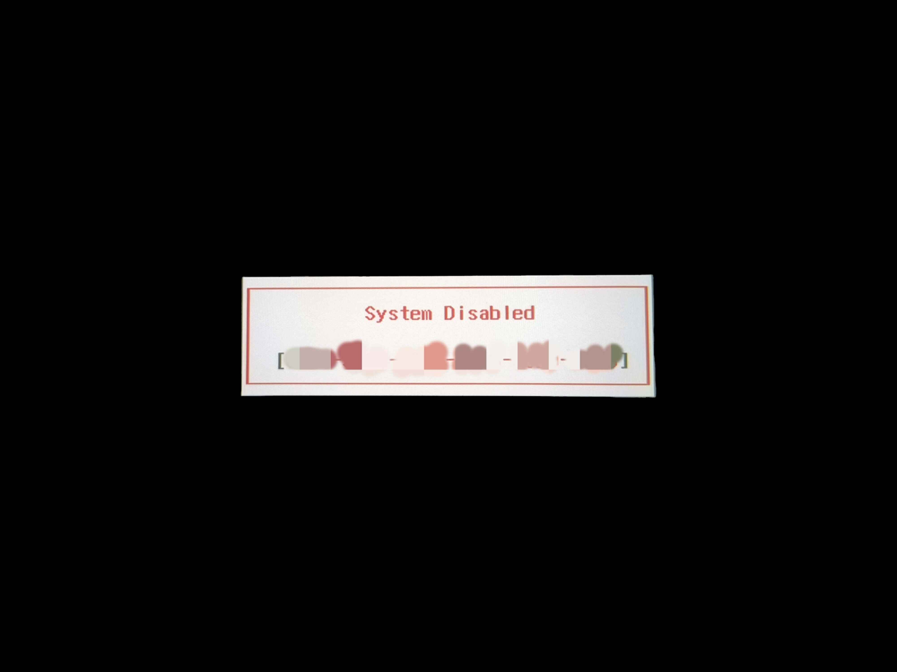

破解富士通平板电脑的UEFI密码
这台设备是 Fujitsu Tablet Stylistic V727，用于日本医疗行业
采用 Intel 公司的 m3y30 处理器，8G LPDDR3 内存，128G SSD，1920x1280 分辨率的屏幕，支持触控和笔触，内置 4G LTE 模块，支持 Feli-Ca，支持 USB Type-C，支持 802.11ac Wi-Fi，支持蓝牙 4.1，支持 GPS，使用 Windows 10 Pro 操作系统。

以往我都会把密码存储在密码管理器中，这次想要重装系统，但是忘记了UEFI密码。
尝试了许多可能的密码，但是都没有成功。最后我找到了一个方法，可以重置UEFI密码。
重置UEFI密码
解密工作需要输入密码时请直接回车3次，一般会出现多位溢出码部分不出溢出码的机器请按照以下方法操作。提示密码时输入下列：
第一次输入3hqgo3按确定报错之后第二次输入jqw534报错之后输入0qww294e按确定之后出一串字符码。第一个密码33是数字 第二个534是数字 第三个0294是数字。其它都是小写字母
把溢出的代码 在这个网站输入
BIOS Master Password Generator for Laptops
然后会得到一个解锁密码，输入即可解锁。
然后进入UEFI设置，重置密码即可。
参考
【维修经验】我自己总结的几种笔记本BIOS密码超级密码不拆机解密方法
Password generator for BIOS